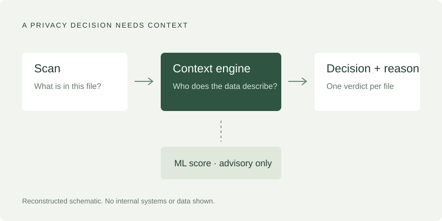
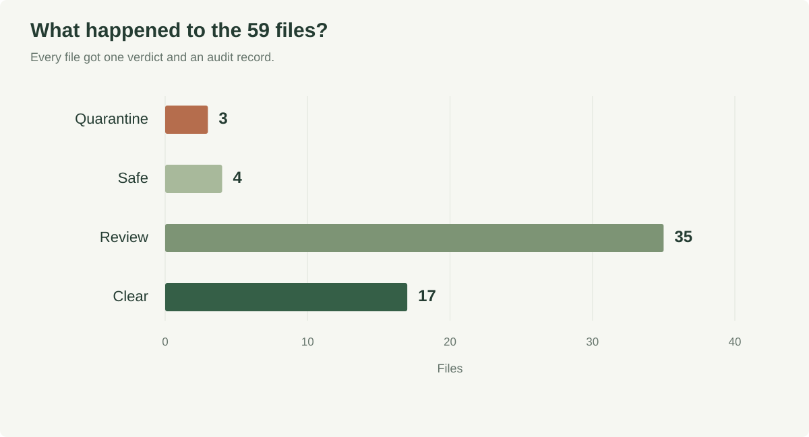

Adding patient context to privacy scans
A privacy decision needs more than a pattern match: business context, a conservative review policy and an audit trail for every file.

The problem
Patient data needed a check before it entered an analytics platform. A content scan can find a name, address or phone number, but it cannot tell whether those fields describe a patient or a healthcare provider.
What I built
Three pieces: a mapper that flattened nested scan output (118 records across 59 objects, covered by 27 automated tests), a rules-based context engine grounded in the interface agreement and documented data classification, and an advisory ML score.
Every file got one verdict: quarantine, safe, review or clear. Anything unclassified defaulted to review. Row-level evidence could escalate a verdict but never downgrade it, and every decision was logged with its reason.
As an independent check, I wrote a specification for one object and had an AI coding agent build a separate version from it. On synthetic files it passed 33 tests and reached the same verdicts as the hand-built engine.
What happened

On a fixed set of 59 files, the engine returned 3 quarantine, 4 safe, 35 review and 17 clear, with an audit record for all 59. The scan alone flagged 3 of the 15 objects classified as patient data. The full pipeline escalated all 15 and wrongly cleared none. Because the classification was an input, that is a coverage check, not a test on unseen data.
The judgment call
The ML model reached 64% accuracy against a 58% baseline, with 40% recall on patient data. That is not good enough to make decisions, so I kept it advisory and let the rules decide. A false clear costs far more than an extra review.
Next steps
This was a prototype. Broader row-level coverage, a live reference lookup and an audit dashboard were the next iteration.
Anonymized professional case study. Charts use verified evaluation counts; the architecture schematic is reconstructed. Internal object names, source files and patient-level data are omitted. Results describe a fixed prototype evaluation, not enterprise production performance.